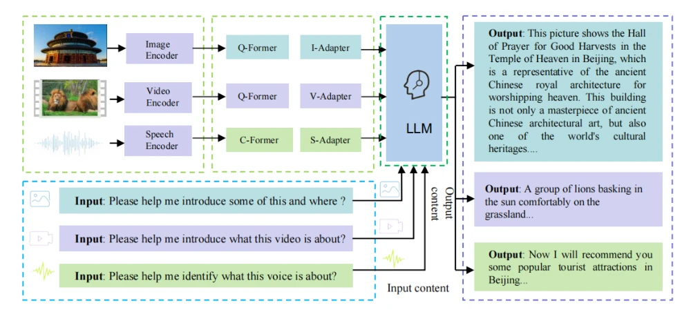
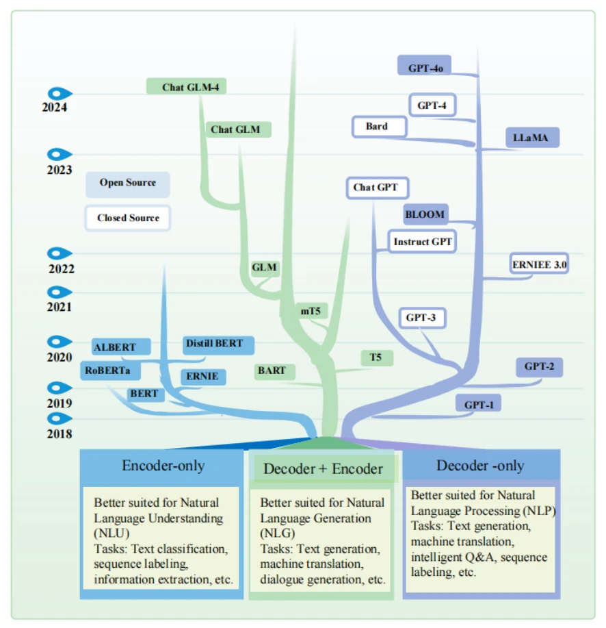
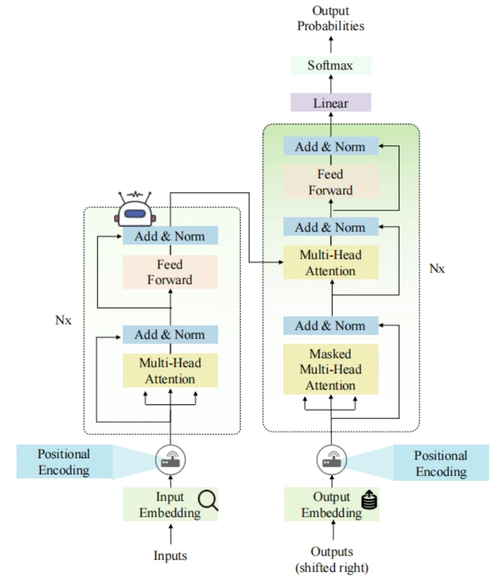
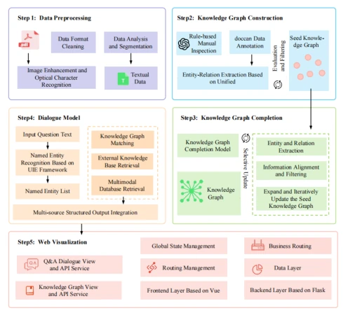
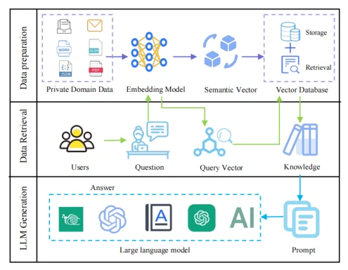
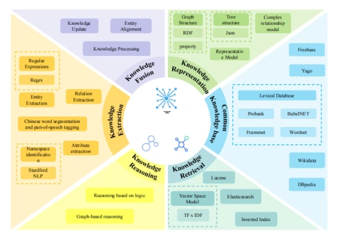
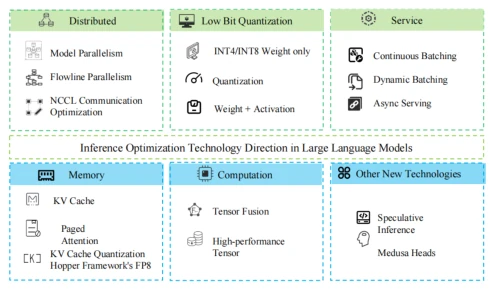
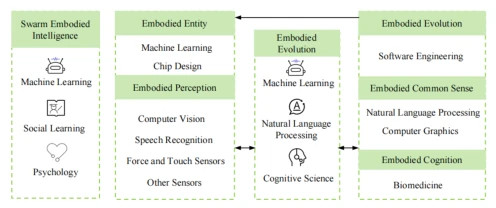
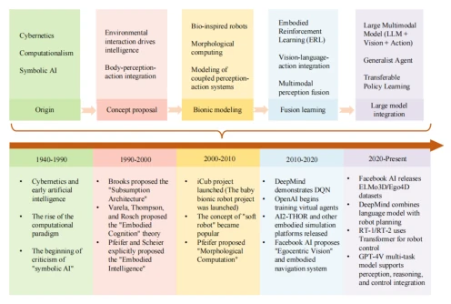
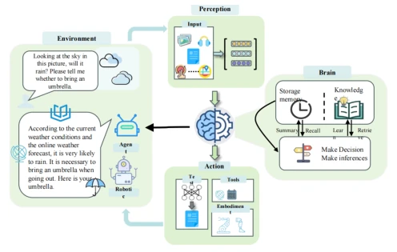

Towards general embodied intelligence: integrating large language models, knowledge bases, and reasoning capabilities to build the next generation of AI agents
Fujiang Yuan, Xia Huang, Lusheng Wang, Jun Ding, Zhen Tian, Yuxin Wang abspdf
This review attempts to deconstruct embodied intelligence using the "universal formula" of "Large Language Models + Knowledge Base + Reasoning", sounding as if equipping robots with a "brain", but essentially it remains an article of "map drawing" rather than "car manufacturing". The author team indeed reviewed the evolution of LLMs from Transformer to multimodal, and pointed out the pain points of symbol-neural hybrid reasoning, which is commendable. However, the title is overly ambitious; "General Embodied Intelligence" (GEI) currently lacks even a proper unified benchmark, and the text admits the awkwardness of "limited empirical cases". Rather than a technical breakthrough, it is more like drawing a blueprint of an "ideal state" for the industry, while also criticizing the shortcomings of existing surveys (such as the lack of a unified architecture) again. It is suitable for readers wishing to quickly grasp the full landscape of the field, but those seeking to reproduce results directly with code should detour, as it does not even mention a new model, consisting entirely of theoretical frameworks and roadmaps.
Existing research exhibits obvious fragmentation: LLMs excel at language but lack physical grounding [3], while Embodied AI (EAI) excels at perception and action but lacks high-level cognitive planning [4]. Although existing surveys have focused on the combination of LLMs and robots, such as Yao et al. [8] reviewing multimodal tasks, Dong et al. [9] exploring human-robot collaboration, and Tan et al. [10] proposing custom manufacturing architectures, these works are often limited to specific scenarios or lack unified architecture design. Although Jeong et al. [11] analyzed the role of LLMs in the five modules of robot control, they were limited by embedded computing and sensor fusion. Wang et al. [12] evaluated GPT-4V but pointed out that long prompts and fixed action sets limit flexibility. This paper aims to fill the gap in system integration, proposing a general framework covering perception-cognition-action, addressing semantic alignment, resource constraints, and reasoning bottlenecks, providing theoretical support for next-generation agents.
The paper proposes a unified GEI technical architecture, core is using LLM as a "neural executor", collaborating with Knowledge Base (KB) and Reasoning Ability (RA). The overall Pipeline is divided into four technical pillars: 1) LLM Layer: Based on Transformer architecture, mastering language and multimodal features through pre-training and fine-tuning (Fig 3); 2) KB Layer: Integrating unstructured text and structured knowledge graphs, supporting fact retrieval and domain knowledge injection (Fig 6); 3) Reasoning Layer: Combining neural network generation capabilities with the rigor of symbolic logic, addressing shortcomings in mathematical and logical reasoning (Fig 7); 4) Embodied Layer: Mapping language instructions to physical actions, achieving perception-action closed loop. In addition, it defines five major research directions such as lightweight deployment, knowledge loop, perception alignment, etc. The framework emphasizes synergy between modules, rather than optimization of single modules, attempting to mitigate LLM hallucination issues through external knowledge, and improve long-horizon planning capabilities through reasoning mechanisms.
As a survey paper, this paper does not propose new algorithm models or conduct empirical experiments. The text does not include specific datasets, baseline model comparisons, or quantitative evaluation metrics. Its "Experiments" section is manifested as a systematic review and comparative analysis of existing literature, such as Table 1 comparing the pros and cons of five relevant surveys including Yao et al. [8], Dong et al. [9], etc. The authors pointed out challenges such as current LLM deployment resource consumption, hallucination issues, and Sim2Real migration difficulties through theoretical analysis. Although lacking empirical data, the text displays an example execution flow of intelligent document processing and question-answering systems through Fig 5, as conceptual validation. The main contribution lies in the construction of the theoretical framework and planning of future directions, rather than verification of performance improvement.
其他图片Other Figures

Fig. 1. Schematic diagram of a unified multimodal large language model architecture.

Fig. 2. Evolution and Taxonomy of Large Language Models.

Fig. 3. Schematic architecture of the Transformer model.

Fig. 4. Construction Process of Large Language Models.

Fig. 5. Description of the execution process of the intelligent document processing and knowledge question answering system.

Fig. 6. Flowchart of knowledge base construction and use in large language model.

Fig. 7. Summary of inference optimization techniques in large language models.

Fig. 8. The core components and development path of embodied intelligence.

Fig. 9. The development of embodied intelligence.

Fig. 11. Example diagram of the integration of embodied intelligence and large language model.